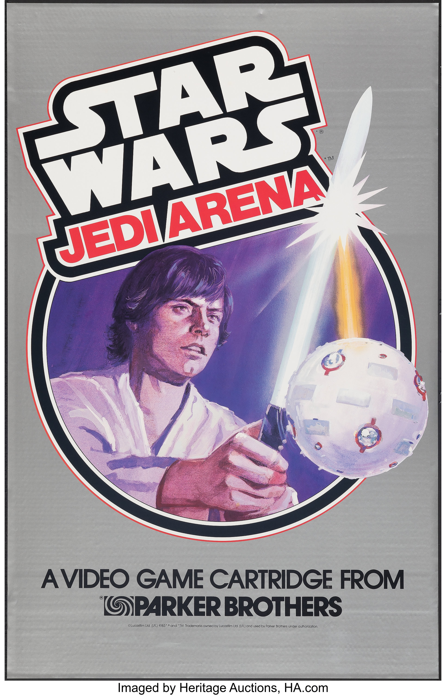
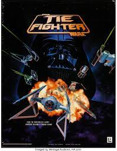
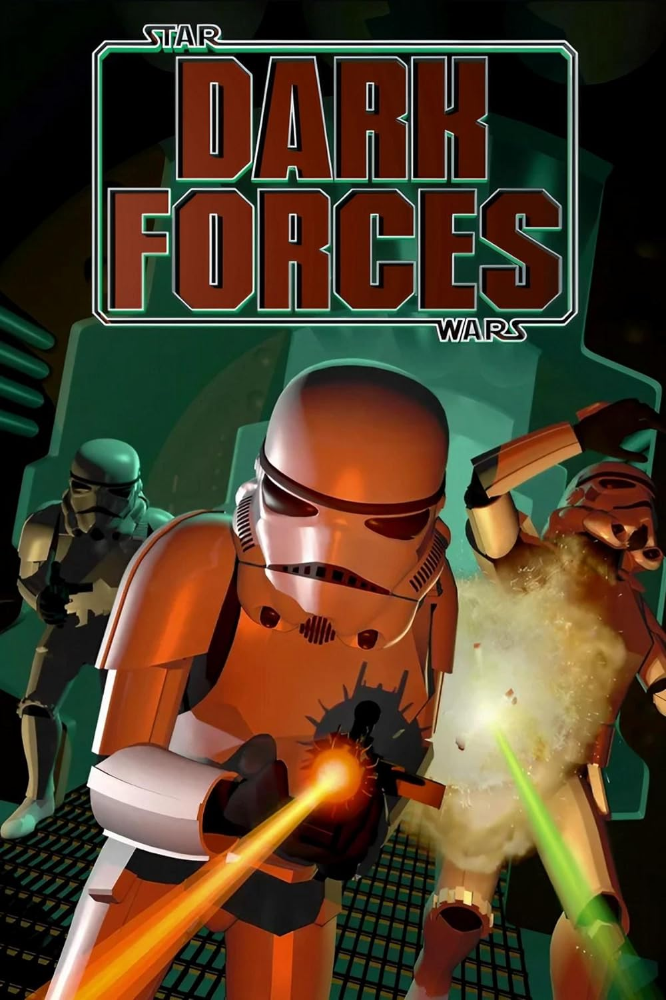
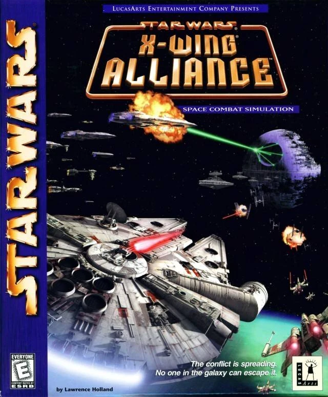
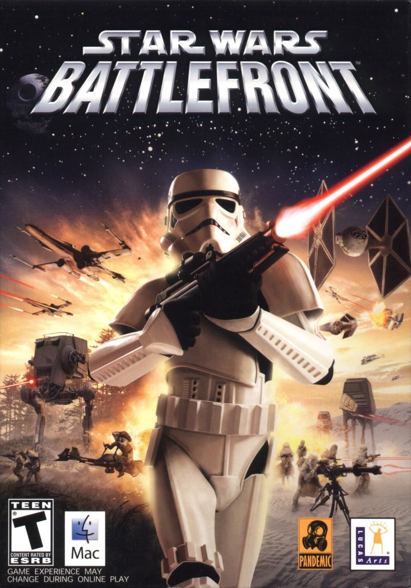
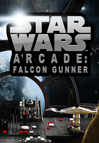
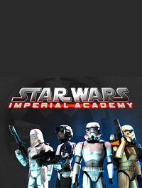
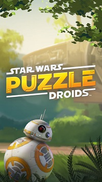
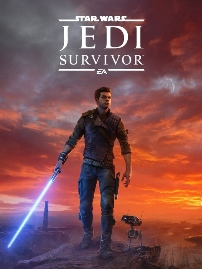

1982
1983
Jedi Arena
1984
1985
1987
1988
1991
1992
1993
1994
TIE Fighter
1995
Dark Forces
1997
1998
X-Wing Alliance
1999

2000
2001
2002
2003
2004
Battlefront
2006
2007
2010
Falcon Gunner
2011
Imperial Academy
2012
2013
2014
2015
2017
Puzzle Droids
2019
2020
2022
2023
Jedi: Survivor
2024

! Précision : Cette page présente un jeu Star Wars pour chaque année ou des jeux Star Wars ont était publié, cependant il en existe plus